Header
Home
Produtos VESTIDO TRANSPASSE BOW $R$ 199,90
VESTIDO TRANSPASSE BOW $R$ 199,90 - REGATA ALCINHA FOLK $R$ 99,90
- TOP CROPPED SUEDE $R$ 129,90
- BATA DECOTE FLUID $R$ 149,90
T-SHIRT LEATHER DULL $R$ 139,90
- CAMISA SUEDE SPAN $R$ 189,90
- 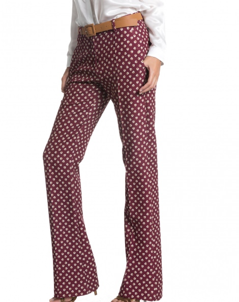 CALÇA CLASSIC PRINT $R$ 159,90
- REGATA ALCINHA FOLK $R$ 99,90
- 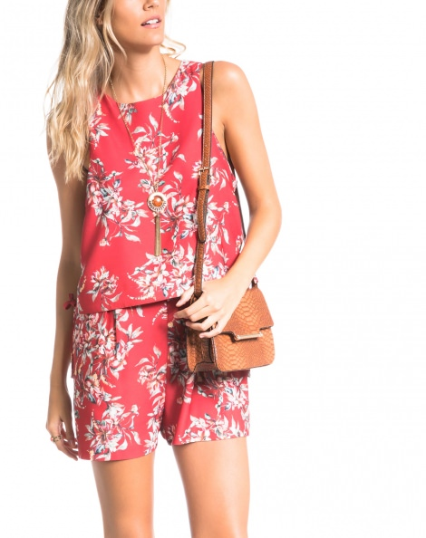 MACAQUINHO ALFAIATARIA PEACE $R$ 149,90
- 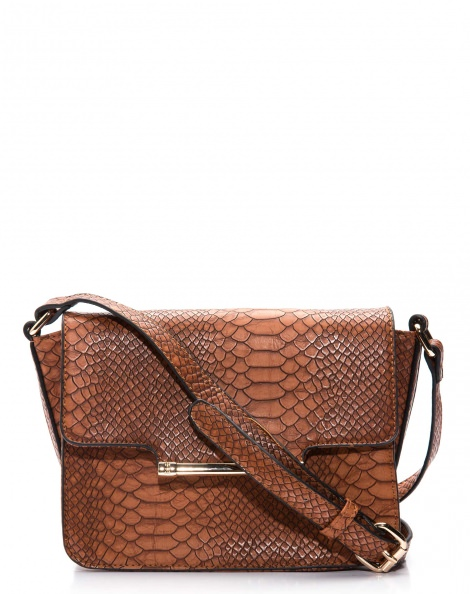 BOLSA FLAP TRIANGLE $R$ 199,90
- 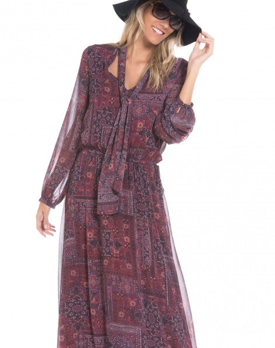 VESTIDO LONGO FLOAT $R$ 219,90
- BATA DECOTE FLUID $R$ 149,90
- 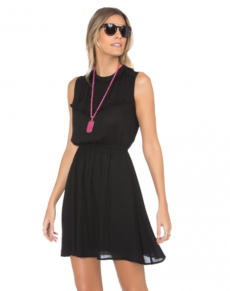 VESTIDO FRANZIDO RECORTES $R$ 139,90
- 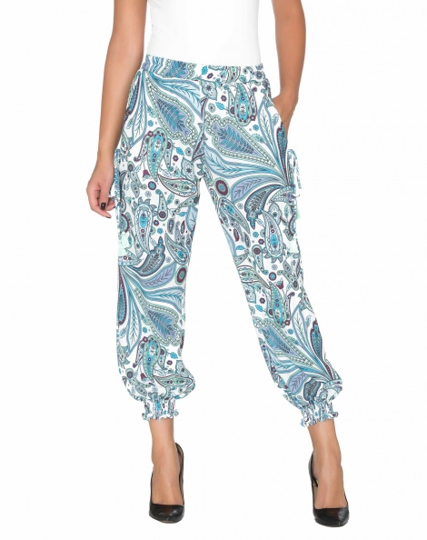 CALÇA COMFORT TASSEL $R$ 139,90
- 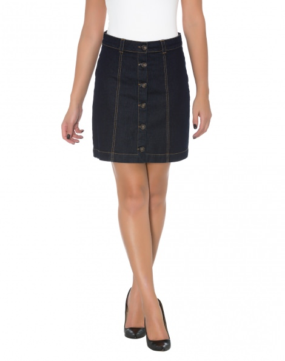 SAIA DENIM BOTÕES $R$ 139,90
- BLUSA LAÇO ISTAMBUL $R$ 149,90
- 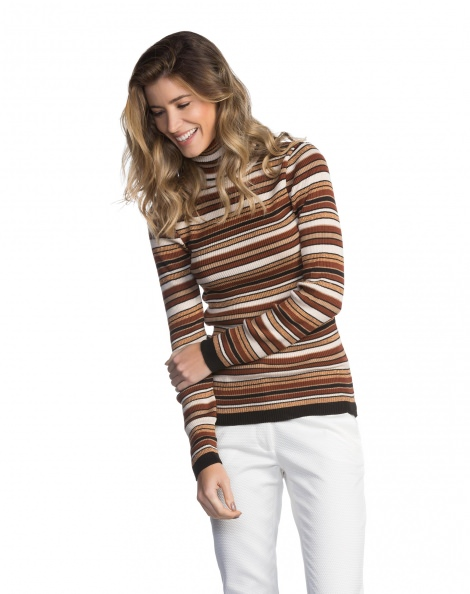 BLUSA RIB STRIPES $R$ 149,90
- CASACO WHITE FUR $R$ 239,90
- 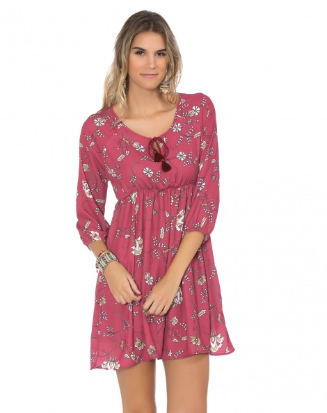 VESTIDO CURTO FESTIVAL $R$ 129,90
- 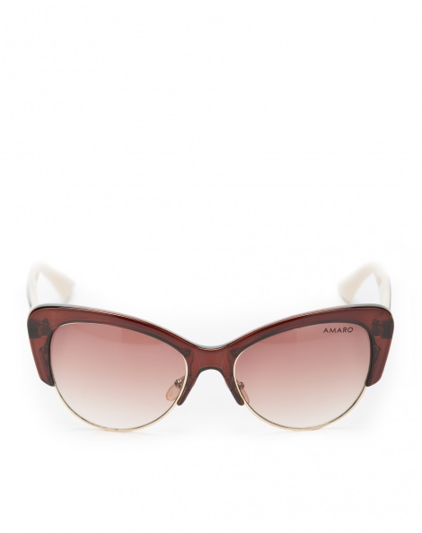 ÓCULOS DE SOL BOLD $R$ 109,90
- 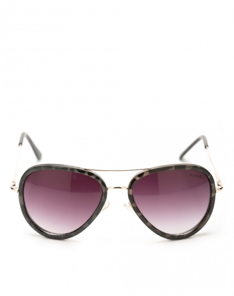 ÓCULOS DE SOL AVIADOR VINTAGE $R$ 109,90
- 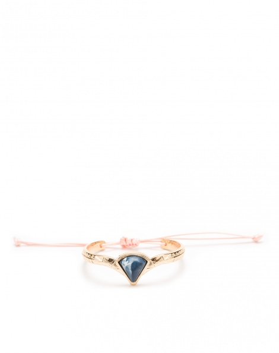 PULSEIRA STYLISH $R$ 29,90
Footer